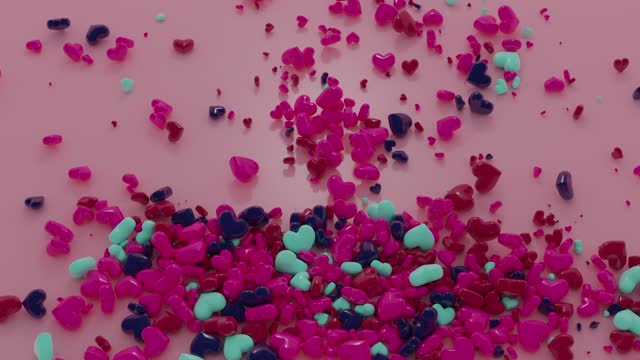

01 / FUERA DEL MARCO
Fuerade cuadro.
Las buenas ideas
no se quedan quietas.
02 / LA IDEA TOMA EL CONTROL
El marco ordena.
La idea lo transforma.
NO ESLA FORMA.ES LO QUE
PROVOCA.
No diseñamos para llenar una pantalla. Diseñamos para cambiar lo que ocurre en ella: una voz propia, una sensación, algo que recuerdas después.

FEEL SOMETHING.03 / LA EMOCIÓN TIENE FORMA
COLOR
IS A
FEELING.
Materia que se encuentra.
Contraste que cambia el ritmo.
Una identidad que se siente.
04 / ENCUENTRA TU SEÑAL
SIGNALTO NOISE.
Reducir el ruido.
Amplificar lo que importa.
IDENTIDAD CONCEPTUAL / 2026
05 / EL MOVIMIENTO EMPIEZA EN UNA LÍNEA
Primero,la pregunta.Después,
el impacto.
Escuchar. Cuestionar. Dibujar.
Construir desde lo que importa.
Llevarlo un poco más lejos.
01 / 05Saltar recorrido ↗
EL SIGUIENTE FRAME ES TUYO.
Hagamosque pase. ↗
Estrategia & identidad
Un punto de vista. Una voz reconocible. Un lenguaje visual con intención.
Diseño & dirección de arte
Tipografía, imagen y composición para construir un universo propio.
Digital & movimiento
Una identidad que responde, se transforma y acompaña.
FRAME es una agencia conceptual. Esta cuarta exploración experimenta con recorrido, transformación y presencia.
Vídeos aportados por el usuario.